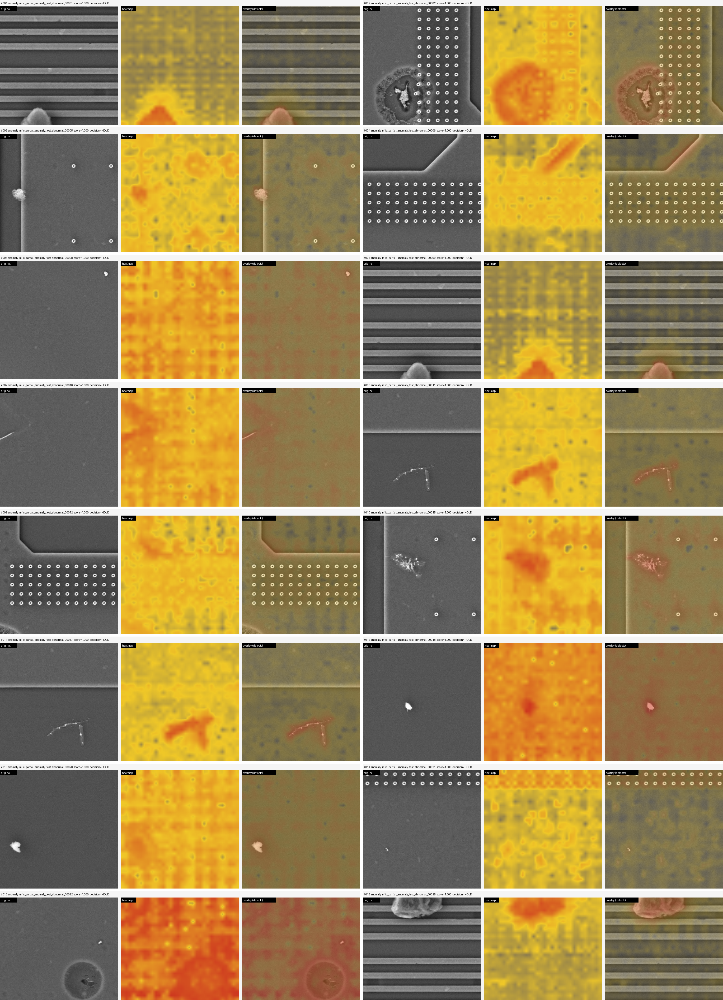
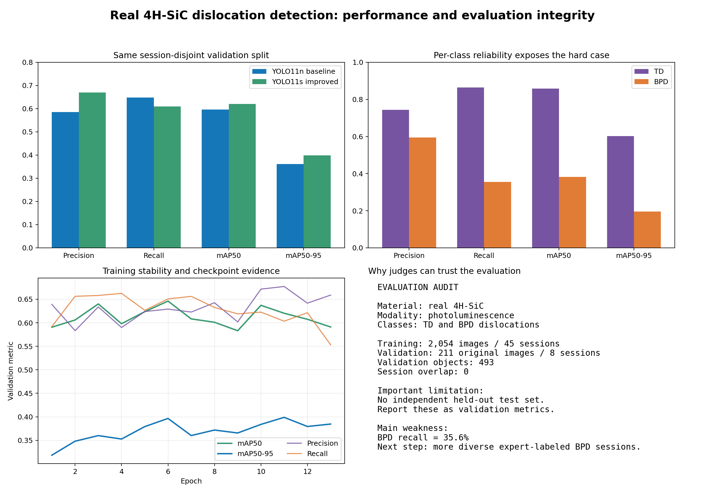
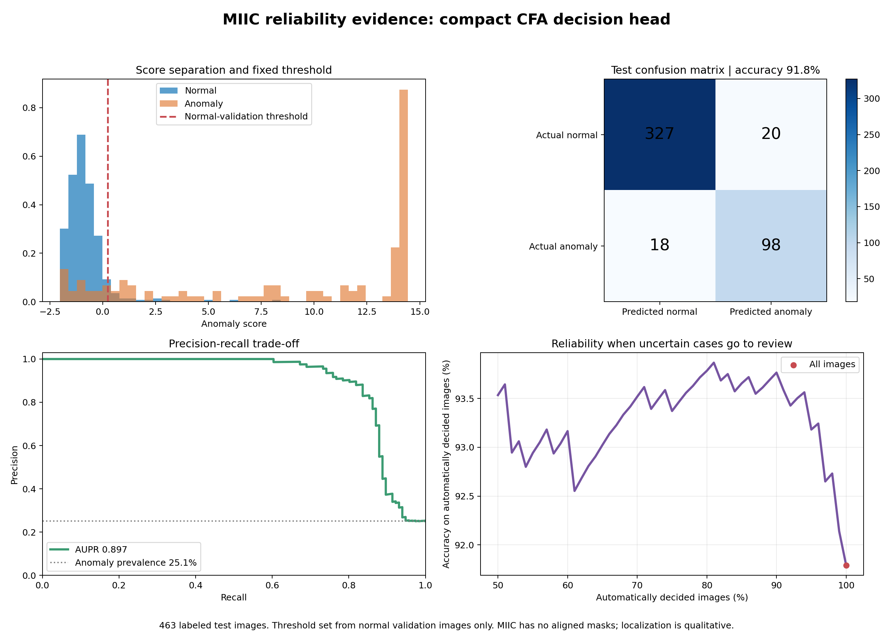

Audit-ready anomaly triage for scarce defect data
Rare defects, expensive labels, and high-stakes review decisions are a bad combination. We turn a small reference set into heatmaps, scores, review decisions, and evidence trails.
Not a black box. A review queue engineers can audit.
The workbench shows the source image, highlighted region, score, verdict, support-shot count, and caveats. It escalates inspection risk; it does not pretend to be automatic wafer rejection.

Improved oriented-box detection on 4H-SiC photoluminescence
The improved YOLO11s-OBB model raises precision and localization quality on the same acquisition-session-disjoint validation split.

Proxy evidence with explicit failure counts
MIIC is a semiconductor SEM proxy, not a SiC claim. It shows the anomaly-triage workflow with calibrated thresholds, uncertainty review, and visible false positives and false negatives.

A focused AI layer for a large inspection market
Semiconductor metrology and inspection equipment is estimated around USD 9B today and forecast into the mid-teens by the early 2030s. Silicon carbide is also a multi-billion-dollar, growing material market. Hong Kong's microelectronics and advanced-manufacturing push makes it a natural pilot ecosystem.
TUM team with AI delivery, CS, quantum systems, and research depth
Sparsh brings applied AI and business delivery. Jakob and Justin bring CS and TUM.ai software engineering leadership. Damia brings quantum systems depth, Fraunhofer experience, and research exposure with UPenn and Cambridge. Sparsh and Damia are EuroTech fellows; Damia is also a TUM Venture Labs fellow.
Our ask: a licensed paired SiC pilot dataset and an inspection partner to measure review-time reduction, failure modes, and operator workflow fit.